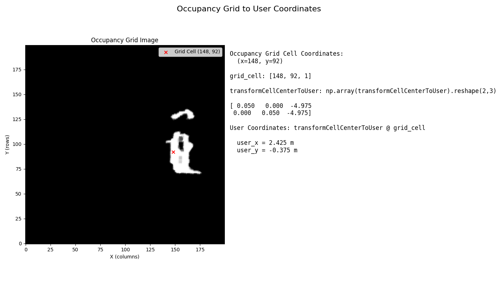

Occupancy grids
Occupancy grid
The occupancy grid is a 2D grid-based representation of the environment, generated by post processing the depth data. Each grid cell contains a probability value indicating the likelihood of occupancy, encoded as an 8-bit unsigned integer (uint8):
0 (uint8) → Probability 0.0 (free space)
255 (uint8) → Probability 1.0 (fully occupied)
Values between 0 and 255 represent intermediate occupancy probabilities. We recommend using a probability threshold of 0.5 (127) to assess whether a cell is occupied or not.
Polar occupancy grid
Note
From the firmware versions >= 1.20.29 the user can also able to retrieve the polar occupancy grid information from the ODS application.
The polar occupancy grid is a compressed representation of the standard occupancy grid using polar coordinates. This grid is an array of 675 elements, each representing a specific direction around the vehicle.
Each index corresponds to an angular slice:
index
irepresents the direction fromi*(360° / 675)to(i + 1)*(360° / 675).This angle is determined using
atan2(ry, rx), where(rx, ry)is the ray direction.
Note
The polar occupancy grid origin is always at user coordinates (0,0)
The value at each index represents the distance to the nearest occupied cell (obstacle) along the corresponding direction, measured in millimeters (mm). If no obstacle is detected along the ray then the value is set to 65535 (indicating an unlimited range).
These grids serve as an input for path planning, obstacle avoidance, and environment mapping applications.
Range of Interest
The default occupancy grid size is 10 x 10 m2 with the calibrated reference coordinate system (RCS) positioned at the center of grid with X-range<=5 meters.
If large vehicles are used for ODS with translation offsets > 1.5 m with respect to the RCS, the occupancy grid size is limiting the detection range of ODS. The detection range on large objects is close to 4 m, which would get clipped by the available 3.5 m range in occupancy grid.
To address this issue, from firmware versions >= 1.10.13 a new parameter is introduced, rangeOfInterest, within the grid configuration. This parameter allows users to extend the grid size to accommodate larger translation offsets, ensuring optimal performance of the ODS in such scenarios.
The rangeOfInterest parameter directly affects the occupancy grid’s dimensions. The grid always maintains a square shape with default resolution of 5cm per cell i.e. 0.05m. Therefore the occupancy grid size is calculated as:
If rangeOfInterest is 7, then the resultant occupancy grid shape is (280,280).
ODS application outputs
From the ifm3d API versions >= 1.6.6, the user is able to retrieve both standard occupancy grid and polar occupancy grid information from the application interface.
To retrieve the standard occupancy grid, please use ODSOccupancyGridV1 class in ifm3d API. For more information please visit ifm3d API documentation.
Name |
Type |
Description |
|---|---|---|
|
uint64 |
timestamp of occupancy grid in nanoseconds - NTP time if NTP server is synchronized |
|
uint16 |
number of grid cells - width (x) |
|
uint16 |
number of grid cells - height (y) |
|
float[6] |
used for affine mapping between occupancy grid cells and user coordinate system |
|
uint8[ |
uint8 array of width x height pixels; 0: object probability is 0; 255: object probability is 1 |
Note
The occupancy grid information is generated by processing the data from all active cameras.
The reference coordinate system is located at the center of the occupancy grid i.e. [100,100] in standard occupancy grid image.
To retrieve the polar occupancy grid, please use ODSPolarOccupancyGridV1 class in ifm3d API. For more information please visit ifm3d API documentation.
Name |
Type |
Description |
|---|---|---|
|
uint32 |
version of the grid |
|
uint64 |
timestamp of the grid |
|
uint16[675] |
A compressed version of the grid using polar coordinates. |
transformCellCenterToUser - transformation parameters
This information helps the user to convert grid-based cell coordinates (used in occupancy grids) into real-world user coordinates (e.g., in meters). This is especially useful when interpreting map data or visualizing positions on an occupancy grid.
The user can retrieve this information by deserializing the buffer received from buffer_id O3R_ODS_OCCUPANCY_GRID. The transformation can be achieved by multiplying the transformCellCenterToUser and grid based cell coordinates

For more details on the mathematical relation, that is transformation chains, please see the example code below: